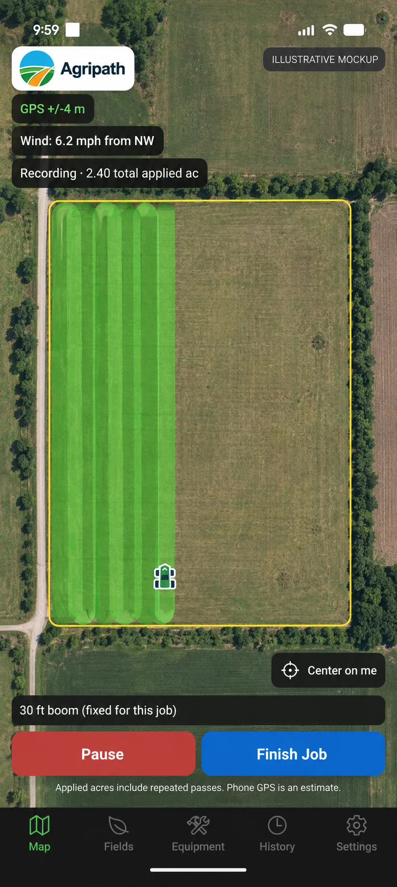

GPS spray coverage app · Android beta
Know where you sprayed.
Keep the record.
Record spray coverage, see overlapping passes, and save session details on the phone you already carry. GPS recording works offline; satellite imagery and optional weather need internet.
Free during beta. Android available for testing. iOS under consideration.
Weather and wind alerts: US locations only. GPS recording does not require weather. International use

From a pass to a saved record
Less to remember at the end of a spray job.
Set your boom width and start recording. AgriPath draws approximate coverage as you move, shades repeated passes, and adds up total applied acres.
Finish with a record you can find again: the field, date, product, rate, water volume, and recorded coverage. Save it on your phone and export it when you need to share.
Built around the job you already do.
How it works
Four steps from phone to spray record.
-
1
Set your boom width
Create an equipment profile with your actual spray width in feet. Choose the right profile before starting each job; coverage calculations use that width.
-
2
Choose or trace a field
Optionally record a boundary by driving the perimeter, then name the field. You can reuse saved boundaries or record a session without a field.
-
3
Start spraying
Press start. A swath polygon paints behind your position at the configured width. Overlap zones appear darker so you can see double-applied passes at a glance. Total applied acres tick up live, including repeated passes.
-
4
Finish and export
Finish Job pauses recording. Save the job with product, rate, water volume, and field, or save and share an export. Export as GeoJSON or KML to a compatible mapping app or share it from your phone.
What’s in it
Coverage in the field. Records afterward.
Tracking
- Live swath polygon
- Drawn at your configured boom width as usable GPS points arrive.
- Overlap shading
- Translucent fill stacks where passes cross. Repeated recorded passes appear darker.
- Background GPS
- Records with the screen off or the app minimized when Android permits. If recording is interrupted, reopen the saved job and resume.
- Headland-friendly
- Top-down tractor icon rotates with your heading so end-row turns read naturally.
Fields
- Continuous boundary tracing
- Drive the edge once. No pin-dropping. Capture interval is tuned for vehicle speeds.
- Saved field library
- Each field tracks session count and total sprayed acres over time.
- Auto-tag detection
- Start a session inside a saved boundary and the field is pre-selected. The field is included in the job notes.
Wind & weather
- Optional wind badge
- Current speed and compass-rotated arrow, top of screen. Tap for a 6-hour forecast.
- Wind threshold alerts
- When weather is configured and enabled, set your threshold for notifications. Android may delay background checks; use on-site measurements before spraying.
- US weather forecasts
- National Weather Service forecasts, with WeatherAPI.com as a possible fallback. Optional, US-only, and internet-dependent. Forecasts are estimates, not on-site measurements.
Records & export
- Session tagging
- Each session captures product, application rate, water volume, and the field, editable after the fact.
- History & filtering
- Search by product, filter by field or by 7/30/90-day windows.
- GeoJSON and KML
- Share recorded coverage and session details with someone who uses GIS software or Google Earth.
Before you try it
A practical coverage recorder.
AgriPath helps you keep track of passes and save useful session records. Here is what to expect from the Android beta.
Take it to the field
- Record on an Android phone with your equipment profile.
- Keep recording without cell service.
- Review saved sessions, fields, coverage, and notes.
- Share GeoJSON and KML files from your phone.
Know the limits
- Phone GPS gives approximate coverage, not precision guidance.
- Applied acres include overlaps and repeated passes.
- Android may interrupt background tracking. Saved work can be resumed; missing points cannot be recovered.
- AgriPath does not steer or control a sprayer or its sections.
Before your first session
Common questions.
Does AgriPath work outside the United States?
Core GPS recording, field boundaries, local records, and GeoJSON/KML exports have no US-only location restriction. They are expected to work outside the US, but international use has not been field-tested. Map imagery depends on the map provider's coverage. Weather forecasts and wind alerts are supported for US locations only. The current interface is English and uses feet, acres, gallons, and mph.
Does it work without cell service?
GPS recording, swath rendering, total applied acreage, field boundaries and saved records work offline. Tracking-only map mode shows saved fields and coverage without satellite imagery. Satellite imagery and new weather forecasts require internet. Offline satellite downloads are not supported.
How accurate is phone GPS?
Phone GPS accuracy varies with the device and surroundings. AgriPath shows reported accuracy and excludes poor fixes and implausible jumps. It is an approximate recording tool, not precision guidance, auto-steer or section control. Total applied acres include overlaps and repeated passes, not just unique field area.
Where does my spray data go?
Spray records, field boundaries and equipment stay on your phone unless you export them. Optional weather sends rounded coordinates through the AgriPath weather gateway on Cloudflare to the National Weather Service and possibly WeatherAPI.com. Google Maps also processes data under its privacy policy. Read the AgriPath Privacy Policy for details.
What about iPhone?
The current beta is Android only. We are focusing on Android reliability before deciding when to build the iPhone version. There is no iOS release date.
How much does it cost?
The Android beta is free to test. Final pricing and the public release date have not been announced. Existing records remain on your device.
Will it drain my battery?
GPS recording and an illuminated screen use battery. Battery life depends on your phone, settings, and session length. Plan a charging option for longer jobs. Screen-off recording is supported when Android permits background tracking.
Can I export records for regulatory or chemical-rep reporting?
Saved sessions export as GeoJSON or KML with coverage, product, rate, water volume, field, start date and total applied acreage. Exports remain available from History. Check the receiving organization's record requirements; a GPS log does not establish regulatory compliance.
Try it on your next field test.
Request the Android beta APK and tell us how recording works with your setup.
hello@agripath.app